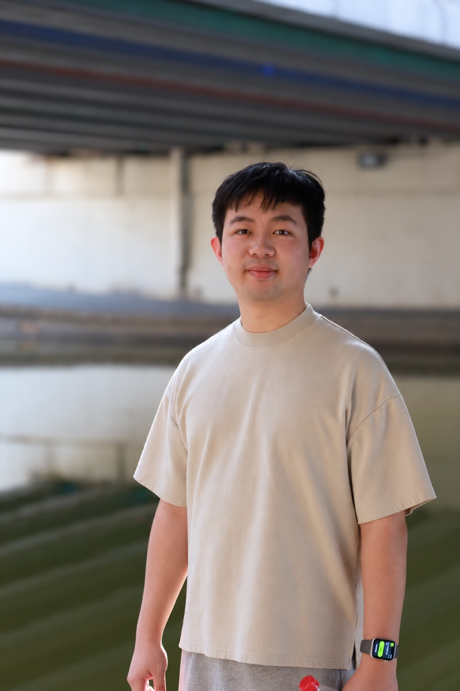
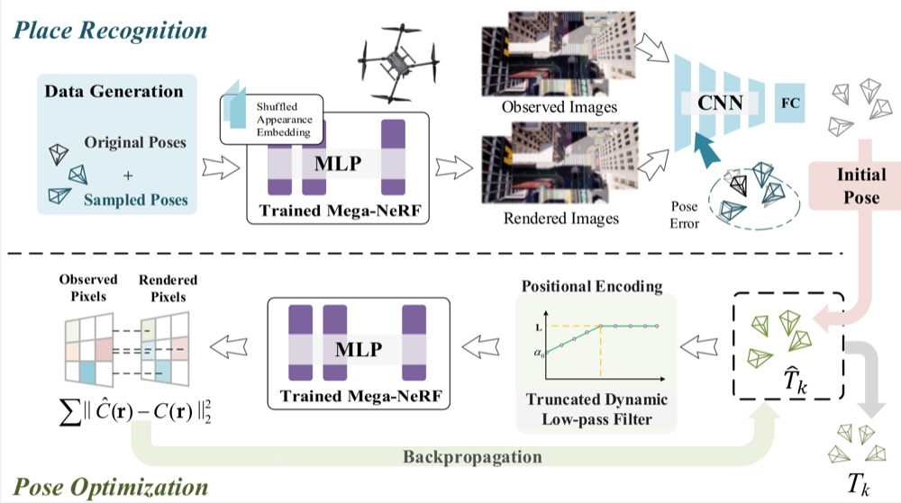
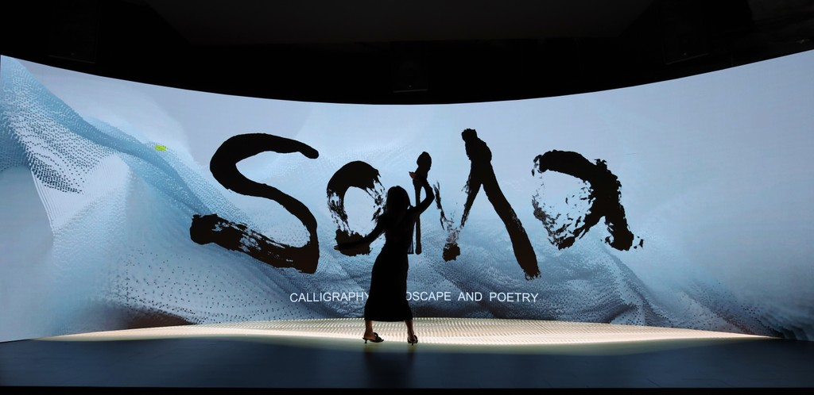
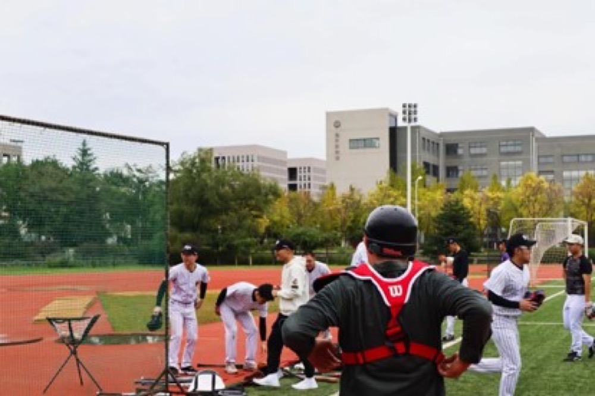
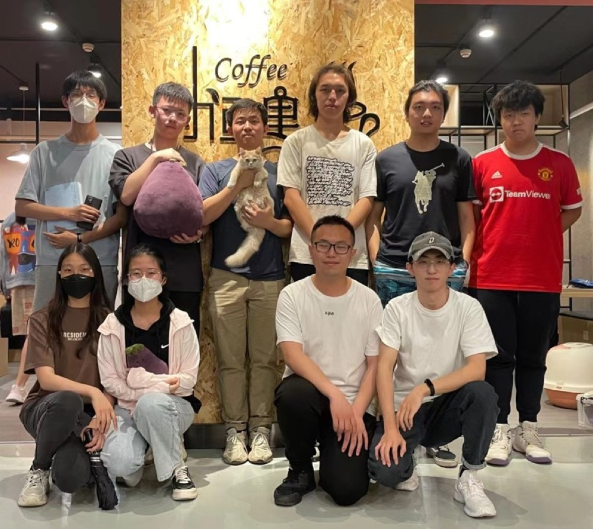

Perceive, Predict, and Plan: a Unified World Action Model for Egocentric Dexterous Manipulation
Jointly learning 3D perception, action-conditioned video prediction, and goal-directed planning from egocentric interactions.
Vision · Learning · Robotics
Seeing the world.
Learning to act in it.
I work on 3D vision and world models, with a focus on understanding and generating interactions with the physical world.

Jointly learning 3D perception, action-conditioned video prediction, and goal-directed planning from egocentric interactions.
Point cloud projections as inputs for consistent feed-forward view synthesis and self-supervised learning.
Hover to view original ↔Tap to compare with original ↔
Real-time global illumination approximation using indirect emitters in screen space.
Understanding and navigating changing environments through natural language queries.
A modular neural simulator for realistic autonomous driving scenes.

Robotic localizationA two-stage pipeline for global localization in a city-scale neural map.
I am pursuing a PhD in Robotics and Autonomous Systems at HKUST (Guangzhou), co-supervised by Martin R. Oswald and Jie Song.
I received my BSc in Computer Science and Technology from Beijing Institute of Technology.
Curriculum vitae ↗2024 / 2026
Head Teaching Assistant · Fall
Lecturer: Jie Song
Build a CroCo transformer from scratch ↗2025
Teaching Assistant · Fall
CVPR · ICCV · ECCV · ICLR · 3DV · ICRA · IROS
RA-L · RAM · Pattern Recognition


On the field
I captained BIT’s Kunpeng Baseball Team in 2021–2022. Catcher, no. 28—a nod to Buster Posey.

Behind the bar
In 2020–2022, I managed a campus coffee shop serving free coffee. Our setup: a Rancilio Classe 5. My signature drink: a herbal-tea latte with flavored cream.